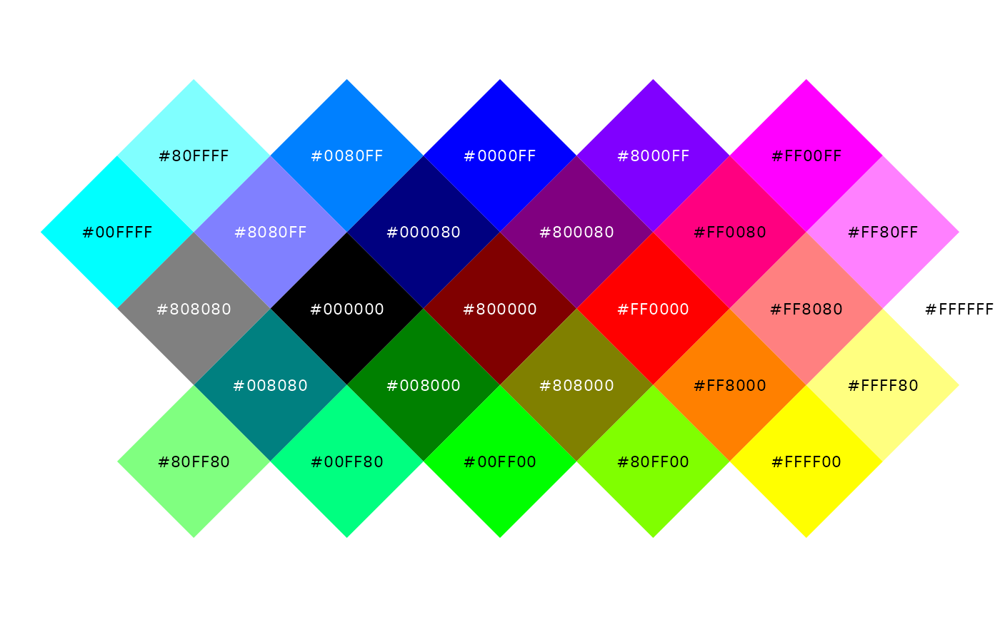
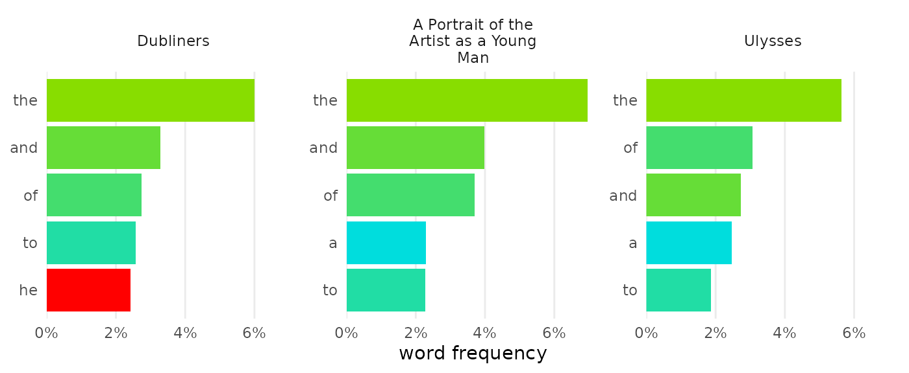
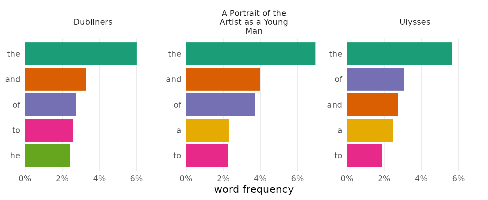

Not everyone has experience coding, but everyone has a favorite
color. To help beginners feel a sense of ownership for the work they do,
tmtyro simplifies color customization using a single function:
change_colors(). It takes the place of twelve different
scaling functions from ggplot2 while providing a standard interface for
any visualization created by tmtyro.
Colors are tricky
ggplot2 can set color in many different ways, but only one way will
work for any given scenario. Clearest is the distinction between
color and fill. The first applies color to points,
lines, and edges. It’s adjusted with functions that have color
in their names, like scale_color_manual(). The
fill aesthetic, on the other hand, defines areas, inside
shapes, and in bars. It’s adjusted with functions that have
fill in their names, like scale_fill_manual(). In
every case, the _fill_ or
_color_ part of a function will indicate
its target.
Difficulty grows from there. Colors and fills are set in different ways for discrete data, continuous data, and binned data. Worse, color palettes are chosen using three incompatible methods depending on color set, with one method for custom manual palettes, another method for Brewer palettes, and a third for Viridis palettes. Many other options are available through additional packages, but this combination of two aesthetics, three types of data, and three types of palettes are built in to ggplot2.
| Nine functions for adjusting color depending on data type and palette choice | |||
| discrete data |
numeric data
|
||
|---|---|---|---|
| continuous | binned | ||
| manual1 | scale_color_manual() |
scale_color_gradient() |
scale_color_steps() |
| Brewer2 | scale_color_brewer() |
scale_color_distiller() |
scale_color_fermenter() |
| Viridis3 | scale_color_viridis_d() |
scale_color_viridis_c() |
scale_color_viridis_b() |
1 For manual palettes, define a vector of colors using the values argument. Set gradient colors in the high and low (and optionally mid) arguments. Colors can be chosen from a list of named colors or defined with a hex code
|
|||
2 For Brewer palettes, choose a numbered or named set with the palette argument.
|
|||
3 For Viridis palettes, choose a lettered or named set with the option argument.
|
|||
This table shows half of the 18 commonest functions for changing colors, but ggplot2 offers 44 without counting spelling variants. And each row of functions uses different parameters for choosing colors. The path to color customization is steep.
change_colors() is easy
All visualization functions from tmtyro can be changed from one
standard method: change_colors(). This function considers a
figure, figures out whether it makes more sense to change color
or fill, and applies a standard interface for manual palettes,
Brewer palettes, and Viridis palettes.
change_colors() manages differentiation among data
types.
-
scale_color_manual()works only for discrete data, andscale_color_gradient()is only good with continuous values. -
scale_color_brewer()will only work for discrete data types, whilescale_color_distiller()works only for continuous data -
scale_color_viridis_d()will only work for discrete data types, whilescale_color_viridis_c()will only work for continous data. change_colors()accommodates discrete and continuous data
change_colors() also introduces one standard interface
of arguments.
-
scale_color_manual()sets colors using named or hexadecimal colors in thevaluesargument -
scale_color_brewer()sets colors using numbers or names with thepaletteargument -
scale_color_viridis_d()sets colors using letters with theoptionargument change_colors()uses thepalettesargument for everything
When code is easy, the only difficult part is choice.
Options are many
manual colors
Most simply, change_colors() will set the colors you
choose. Setting four colors for four items will assign them directly;
any other number will make a gradient.
Color names like “pink” and “orange” work in R, as do specific hues like “forestgreen” and “steelblue.”1 In addition to named colors, R will accept colors as “hex codes” using hexadecimal notation.2 The first two digits of a hex code describe how red a color is from 0 to 255; the middle two describe how green it is; and the last two describe how blue. Combinations in the following chart give a sense of how they work, but an online color picker may help to narrow things down.3

Use manual colors—as named colors or as hex codes—by combining them
in a vector inside change_colors():
dubliners_count |>
change_colors(c("#00BBBB", "tan", "purple"))Custom colors also work well when naming particular values:
joyce_count |>
change_colors(c(
"#88DD00", "#00DDDD",
he = "red"))
Brewer palettes
If you’d rather not pick colors manually, Brewer palettes are an excellent choice. The Brewer qualitative palettes are well suited for discrete data, using color to distinguish categories like documents or words.
Brewer’s sequential palettes are ideal for showing differences in magnitude:
Choose a Brewer palette by using its name or number in the
palette argument:
joyce_count |>
change_colors("Brewer", palette = "Dark2")
Viridis palettes
Viridis palettes offer another set of choices for colors in your visualizations. These palettes not only look beautiful on the screen, but they typically work well for monochrome print and are designed to accommodate most color vision needs.
These palettes work especially well for continuous data. Option “H” or “turbo” could work for discrete scales, but it also has a few caveats: among them, it’s poorly suited for black and white printing since it maps high to low along a circular path, from dark to light to dark.
Choose a Viridis palette by using its name or letter in the
palette argument:
dubliners |>
expand_documents() |>
visualize(digits = 1) |>
change_colors("Viridis", palette = "mako")